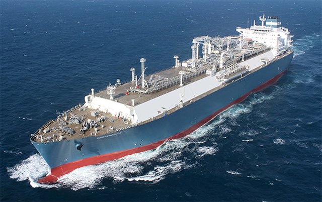
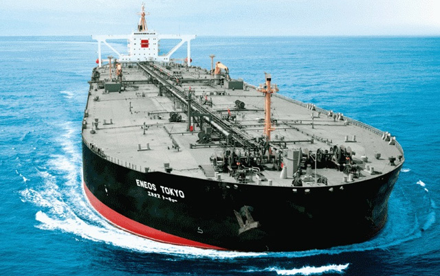
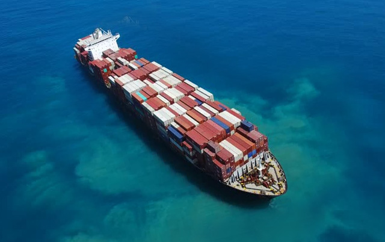
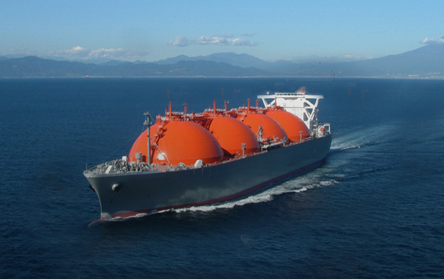

STX BUSINESS


- 친환경 고효율 엔진으로
LNG선 시장선도
- 친환경 고효율 엔진으로 LNG선 시장선도 LNG선은 영하 163도로 액화된 천연가스를 운반하는 선박입니다.
- 특히 2001년에는 기존 대비 운항성능과 연비가 뛰어난 전기추진 LNG선'을, 2008·2009년에는 세계 최대 크기인26만6천 입방미터급 LNG선을, 2013년 이후에는 연비를 혁신적으로 개선한 '친환경 고효율 엔진 LNG선'을 각각성공적으로 건조함으로서 앞선 기술력을 선보였습니다.
- 또한 LNG선의 핵심기술이라고 할 수 있는 화물창에서는 독자 개발한 한국형 화물창인 KC-1을 실선에 적용하는 성공하였습니다.

- LR1 CLASS TANKER시장에서
누적척수 1위를 기록
- STX조선해양의 석유제품운반선은 최소 저항 선형을 적용하고, 연료 효율성이 입증된 G-Type 엔진과 고효율 저진동 성능을 가진 WCT프로펠러 등을 탑재하여 30%이상 향상된 연비와 경쟁력을 자랑합니다. 또한 화물창 내 특수코팅을 적용해 재화오염 방지와 특수화물 운송을 가능하도록 하였습니다
- 이러한 기술력을 바탕으로 STX조선해양은 LR1 CLASS TANKER시장에서 2017년 현재 누적건조척수 1위를 기록하였습니다

- 컨테이너선 시장의 새 역사
컨테이너선 대형화 주도
- STX조선해양은 5,000TEU급 컨테이너선이 주종을 이루던 지난 1999년에 세계 최초로 6,200TEU급 컨테이너선을 개발한 이래, 8,100TEU급(2002년), 9,600TEU급(2003년), 13,300TEU급(2006년), 16,000TEU급(2007년) 선박을 세계 최초로 개발하며 컨테이너선의 대형화를 선도해왔습니다.
- 2017년에는 23,000TEU급 컨테이너선 6척을 수주하며 컨테이너선 시장의 새 역사를 쓰고 있습니다.

- '반냉각' 방식의
최첨단 가스 운반선 건조
- 친환경 고효율 엔진으로 LNG선 시장선도 LNG선은 영하 163도로 액화된 천연가스를 운반하는 선박입니다.
- STX조선해양은 영하 104도로 운반되는 액화 에틸렌을 포함해 암모니아, LPG등을 운송할 수 있는 시스템을 갖추고 있고 온도와 압력을 동시에 낮춰 액화 효율성을 극대화시킨 이러한 기술력을 바탕으로 STX조선해양은 LR1 CLASS시장에서 2017년 현재 누적건조척수 1위를 기록하였습니다
- '반냉각(Semi-Refrigerated)'방식의 최첨단 가스 운반선을 건조하였으며, 수년간의 건조경험을 통해 최고의 품질을 제공합니다.